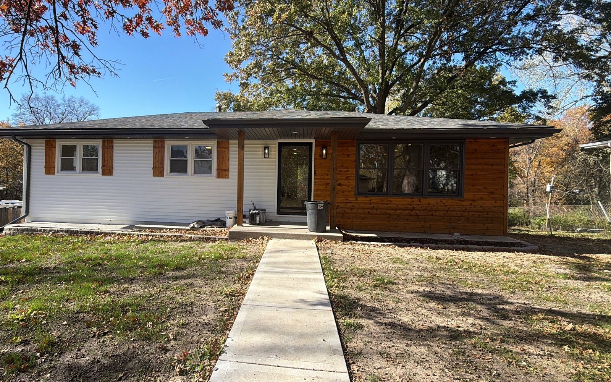
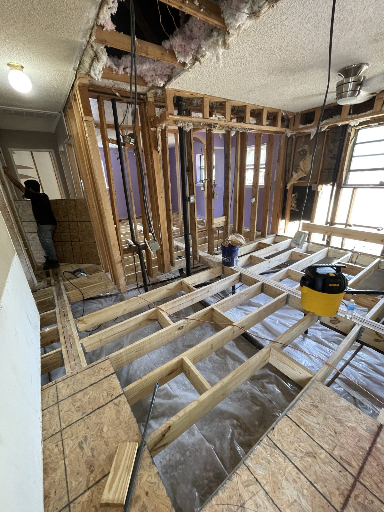

Fix & flip
Compra y remodelación en un solo préstamo.
- Evaluado sobre el activo
- Remodelación por desembolsos
- Solo intereses durante la obra
ASAP Lending financia propiedades de inversión en seis estados desde nuestra oficina en Kansas City. Evaluamos la propiedad y el plan, fondeamos la remodelación por etapas y respondemos las solicitudes completas el mismo día hábil.
Elija el que corresponde a su salida. Si no está seguro, aplique y nosotros lo ubicamos.
Compra y remodelación en un solo préstamo.
La renta califica el préstamo.
Obra nueva y remodelación mayor.
Capital corto para un cierre doble.
Precio de compra, presupuesto de remodelación y valor después de reparaciones (ARV). Traiga eso y un plan de salida, y podemos dimensionar el préstamo.
Dirección, números y salida. Cinco minutos en línea.
Una persona que decide lo lee el mismo día hábil.
Una hoja de términos para este proyecto, no una tabla genérica.
Confirmamos el valor; la compañía de títulos limpia el expediente.
Firma en títulos. Sale el dinero de la compra.
El dinero de obra se libera al verificar avances. Venda o refinancie para liquidar.
Nuestros socios compran, remodelan y venden propiedades en el área de Kansas City. Por eso nuestras preguntas suenan a las de un contratista y nuestras respuestas llegan rápido.



Préstamos fix & flip que cubren compra y remodelación, préstamos DSCR para rentas, préstamos de construcción y remodelación mayor por etapas (la obra nueva depende del prestatario y del estado), y fondeo transaccional para cierres dobles. Si su proyecto no encaja en uno de esos, envíelo de todos modos y le diremos qué podemos estructurar.
Porque la tasa publicada casi nunca es la que usted recibe. Cada préstamo se cotiza con sus propios números: la propiedad, el alcance de obra, su experiencia y su salida. Envíe el proyecto y recibirá términos por escrito para ese proyecto.
El proyecto es lo que más pesa. Nuestros préstamos basados en el activo no tienen requisito de crédito, y en ellos no pedimos W-2 ni declaraciones de impuestos. Otros tipos de préstamo sí requieren revisar el crédito. Aplicar nunca consulta su crédito: primero le explicamos los programas, y el crédito solo se consulta si el programa lo requiere o si usted elige uno que lo requiera, antes de preparar su hoja de términos.
Sí. Financiamos a inversionistas nuevos cuando la evaluación del proyecto es sólida.
Días en un proyecto limpio, no semanas. El tiempo depende del trabajo de título y del avalúo, y le decimos la fecha realista desde el principio.
Missouri, Kansas, Florida, Texas, Arkansas y Nebraska. Nuestra oficina está en Kansas City.
No. Solo financiamos propiedades de inversión con fines comerciales.
Las solicitudes completas reciben respuesta el mismo día hábil, con una revisión gratuita de su ARV.